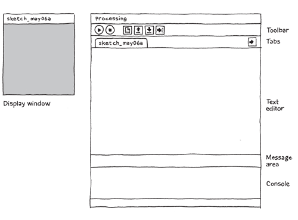
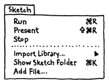
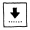

Welcome to Python Mode for Processing!
Start by visiting http://processing.org/download
and selecting the Mac, Windows, or Linux version, depending
on what machine you have. Installation on each machine is
straightforward:
- On Windows, you'll have a .zip file. Double-click it,
and drag the folder inside to a location on your hard
disk. It could be Program Files or simply the desktop,
but the important thing is for the processing folder to
be pulled out of that .zip file. Then double-click
processing.exe to start.
- The Mac OS X version is also a .zip file.
Double-click it and drag the Processing icon to the
Applications folder. If you're using someone else's
machine and can't modify the Applications folder, just
drag the application to the desktop. Then double-click
the Processing icon to start.
- The Linux version is a .tar.gz file, which should be
familiar to most Linux users. Download the file to your
home directory, then open a terminal window, and
type:
tar xvfz processing-xxxx.tgz
(Replace xxxx with the rest of the file's name, which is
the version number.) This will create a folder named
processing-2.0 or something similar. Then change to that
directory:
cd processing-xxxx
and run it:
./processing
With any luck, the main Processing window will now be
visible. Everyone's setup is different, so if the program
didn't start, or you're otherwise stuck, visit the troubleshooting
page for possible solutions.

The Processing Development Environment.
Python Mode
Processing doesn't include support for the Python
programming language by default. In order to enable Python
support, you'll need to install an add-on called Python
Mode. You can do this by clicking on the drop-down menu on
the right side of the tool bar and selecting "Add Mode..."
A window with the title "Mode Manager" will appear. Scroll
down until you see "Python" and press "Install."
More information here.
After you've installed Python Mode, you can switch back
and forth between the Python and Java versions of
Processing using the drop-down menu in the tool bar. If you
find yourself getting strange syntax errors or exceptions
when running your program, make sure you have the right
mode selected!
Your First Program
You're now running the Processing Development
Environment (or PDE), with Python Mode installed. There's
not much to it; the large area is the Text Editor, and
there's a row of buttons across the top; this is the
toolbar. Below the editor is the Message Area, and below
that is the Console. The Message Area is used for one line
messages, and the Console is used for more technical
details.
In the editor, type the following:
ellipse(50, 50, 80, 80)
This line of code means "draw an ellipse, with the
center 50 pixels over from the left and 50 pixels down from
the top, with a width and height of 80 pixels." Click the
Run button, which looks like this:

If you've typed everything correctly, you'll see this
appear in the Display Window:
If you didn't type it correctly, the Message Area will
turn red and complain about an error. If this happens, make
sure that you've copied the example code exactly: the
numbers should be contained within parentheses and have
commas between each of them.
One of the most difficult things about getting started
with programming is that you have to be very specific about
the syntax. The Processing software isn't always smart
enough to know what you mean, and can be quite fussy about
the placement of punctuation. You'll get used to it with a
little practice.
Next, we'll skip ahead to a sketch that's a little more
exciting. Delete the text from the last example, and try
this:

def setup():
size(480, 120)
def draw():
if mousePressed:
fill(0)
else:
fill(255)
ellipse(mouseX, mouseY, 80, 80)
This program creates a window that is 480 pixels wide
and 120 pixels high, and then starts drawing white circles
at the position of the mouse. When a mouse button is
pressed, the circle color changes to black. We'll explain
more about the elements of this program in detail later.
For now, run the code, move the mouse, and click to
experience it.
Note: Be careful about how you indent each line!
Indentation is important in Python, and indenting
incorrectly or inconsistently can cause your program to
work differently from how you intended, or not work at all.
You can use any number of spaces, as long as you're
consistent about the number of spaces you use. (Many Python
programmers prefer four spaces, others prefer two.) You can
also use the tab key to indent your code, but don't use
tabs and spaces for indentation in the same program.
Show
So far we've covered only the Run button, though you've
probably guessed what the Stop button next to it does:

If you don't want to use the buttons, you can always use
the Sketch menu, which reveals the shortcut Ctrl-R (or
Cmd-R on the Mac) for Run. Below Run in the Sketch menu is
Present, which clears the rest of the screen to present
your sketch all by itself:

You can also use Present from the toolbar by holding
down the Shift key as you click the Run button.
Save
The next command that's important is Save. It's the
downward arrow on the toolbar:

You can also find it under the File menu. By default,
your programs are saved to the "sketchbook," which is a
folder that collects your programs for easy access.
Clicking the Open button on the toolbar (the arrow pointing
up) will bring up a list of all the sketches in your
sketchbook, as well as a list of examples that are
installed with the Processing software:

It's always a good idea to save your sketches often. As
you try different things, keep saving with different names,
so that you can always go back to an earlier version. This
is especially helpful if - no, when - something
breaks. You can also see where the sketch is located on the
disk with Show Sketch Folder under the Sketch menu.
You can also create a new sketch by pressing the New
button on the toolbar:
Examples and Reference
Learning how to program with Processing and Python
involves exploring lots of code: running, altering,
breaking, and enhancing it until you have reshaped it into
something new. With this in mind, the Processing software
download includes dozens of examples that demonstrate
different features of the software. To open an example,
select Examples from the File menu or click the Open icon
in the PDE. The examples are grouped into categories based
on their function, such as Form, Motion, and Image. Find an
interesting topic in the list and try an example.
The Processing Reference explains every code element
with a description and examples. The reference programs are
much shorter (usually four or five lines) and easier to
follow than the longer code found in the Examples folder.
We recommend keeping the reference open while you're
reading this book and while you're programming. It can be
navigated by topic or alphabetically; sometimes it's
fastest to do a text search within your browser window.
The reference was written with the beginner in mind; we
hope that we've made it clear and understandable. We're
grateful to the many people who've spotted errors over the
years and reported them. If you think you can improve a
reference entry or you find a mistake, please let us know
by clicking on the link at the top of each reference
page.
Processing is a simple programming environment that was
created to make it easier to develop visually oriented
applications with an emphasis on animation and providing
users with instant feedback through interaction. The
developers wanted a means to "sketch" ideas in
code. As its capabilities have expanded over the past
decade, Processing has come to be used for more advanced
production-level work in addition to its sketching role.
Originally built as a domain-specific extension to Java
targeted towards artists and designers, Processing has
evolved into a full-blown design and prototyping tool used
for large-scale installation work, motion graphics, and
complex data visualization.
Python Mode for Processing is an extension to Processing,
allowing you to write Processing programs in the Python
programming language (instead of the Java-like Processing
programming language). Program elements in Processing are
fairly simple, regardless of which language you're learning
to program in. If you're familiar with Python, it's best to
forget that Processing has anything to do with it for a
while, until you get the hang of how the API works.
The latest version of Processing can be downloaded at
http://processing.org/download
An important goal for the project was to make this type of
programming accessible to a wider audience. For this
reason, Processing is free to download, free to use, and
open source. But projects developed using the Processing
environment and core libraries can be used for any purpose.
This model is identical to GCC, the GNU Compiler
Collection. GCC and its associated libraries (e.g. libc)
are open source under the GNU Public License (GPL), which
stipulates that changes to the code must be made available.
However, programs created with GCC (examples too numerous
to mention) are not themselves required to be open
source.
Python Mode for Processing consists of:
- The Processing Development Environment (PDE). This is
the software that runs when you double-click the
Processing icon. The PDE is an Integrated Development
Environment (IDE) with a minimalist set of features
designed as a simple introduction to programming or for
testing one-off ideas.
- A collection of functions (also referred to as
commands or methods) that make up the "core"
programming interface, or API, as well as several
libraries that support more advanced features such as
sending data over a network, reading live images from a
webcam, and saving complex imagery in PDF format.
- The Python Mode add-on, which makes it possible to
write programs in Python that look and behave like
Processing programs and have access the Processing
API.
- An active online community, based at http://processing.org.
For this reason, references to "Processing" can
be somewhat ambiguous. Are we talking about the API, the
language, the development environment, or the web site?
We'll be careful in this text when referring to each.
Sketching with Processing
A Processing program is called a sketch. The
idea is to make programming feel more like scripting, and
adopt the process of scripting to quickly write code.
Sketches are stored in the sketchbook, a folder
that's used as the default location for saving all of your
projects. Sketches that are stored in the sketchbook can be
accessed from File → Sketchbook. Alternatively, File
→ Open... can be used to open a sketch from elsewhere
on the system.
Advanced programmers need not use the PDE, and may instead
choose to use its libraries with the Python environment of
choice. However, if you're just getting started, it's
recommended that you use the PDE for your first few
projects to gain familiarity with the way things are done.
To better address our target audience, the conceptual model
(how programs work, how interfaces are built, and how files
are handled) is somewhat different from other programming
environments.
Hello world
The Processing equivalent of a "Hello World" program is
simply to draw a line:
line(15, 25, 70, 90)
Enter this example and press the Run button, which is an
icon that looks like the Play button from any audio or
video device. Your code will appear in a new window, with a
gray background and a black line from coordinate (15, 25)
to (70, 90). The (0, 0) coordinate is the upper left-hand
corner of the display window. Building on this program to
change the size of the display window and set the
background color, type in the code below:
size(400, 400)
background(192, 64, 0)
stroke(255)
line(150, 25, 270, 350)
This version sets the window size to 400 x 400 pixels, sets
the background to an orange-red, and draws the line in
white, by setting the stroke color to 255. By default,
colors are specified in the range 0 to 255. Other
variations of the parameters to the
stroke()
function provide alternate results:
stroke(255) # sets the stroke color to white
stroke(255, 255, 255) # identical to the line above
stroke(255, 128, 0) # bright orange (red 255, green 128, blue 0)
stroke("#FF8000") # bright orange as a web color
stroke(255, 128, 0, 128) # bright orange with 50% transparency
The same alternatives work for the
fill()
function, which sets the fill color, and the
background() function, which clears the display
window. Like all Processing functions that affect drawing
properties, the fill and stroke colors affect all geometry
drawn to the screen until the next fill and stroke
functions.
Hello mouse
A program written as a list of statements (like the
previous examples) is called a static sketch. In a
static sketch, a series of functions are used to perform
tasks or create a single image without any animation or
interaction. Interactive programs are drawn as a series of
frames, which you can create by adding functions titled
setup() and draw() as shown in the code
below. These are built-in functions that are called
automatically.
def setup():
size(400, 400)
stroke(255)
background(192, 64, 0)
def draw():
line(150, 25, mouseX, mouseY)
The
setup() block runs once, and the
draw() block runs repeatedly. As such,
setup() can be used for any initialization; in
this case, setting the screen size, making the background
orange, and setting the stroke color to white. The
draw() block is used to handle animation. The
size() function must always be the first line
inside
setup().
Because the
background() function is used only
once, the screen will fill with lines as the mouse is
moved. To draw just a single line that follows the mouse,
move the
background() function to the
draw() function, which will clear the display
window (filling it with orange) each time
draw()
runs.
def setup():
size(400, 400)
stroke(255)
def draw():
background(192, 64, 0)
line(150, 25, mouseX, mouseY)
Static programs are most commonly used for extremely simple
examples, or for scripts that run in a linear fashion and
then exit. For instance, a static program might start, draw
a page to a PDF file, and exit.
Most programs will use the
setup() and
draw() blocks. More advanced mouse handling can
also be introduced; for instance, the
mousePressed() function will be called whenever
the mouse is pressed. In the following example, when the
mouse is pressed, the screen is cleared via the
background() function:
def setup():
size(400, 400)
stroke(255)
def draw():
line(150, 25, mouseX, mouseY)
def mousePressed():
background(192, 64, 0)
Creating images from your work
If you don't want to distribute the actual project, you
might want to create images of its output instead. Images
are saved with the saveFrame() function. Adding
saveFrame() at the end of draw() will
produce a numbered sequence of TIFF-format images of the
program's output, named screen-0001.tif,
screen-0002.tif, and so on. A new file will be
saved each time draw() runs - watch out,
this can quickly fill your sketch folder with hundreds of
files. You can also specify your own name and file type for
the file to be saved with a function like:
saveFrame("output.png")
To do the same for a numbered sequence, use # (hash marks)
where the numbers should be placed:
saveFrame("output-####.png")
For high quality output, you can write geometry to PDF
files instead of the screen, as described in the later
section about the
size() function.
Examples and reference
While many programmers learn to code in school, others
teach themselves and learn on their own. Learning on your
own involves looking at lots of other code: running,
altering, breaking, and enhancing it until you can reshape
it into something new. With this learning model in mind,
the Processing software download includes hundreds of
examples that demonstrate different features of the
environment and API.
The examples can be accessed from the File → Examples
menu. They're grouped into categories based on their
function (such as Motion, Typography, and Image) or the
libraries they use (PDF, Network, and Video).
Find an interesting topic in the list and try an example.
You'll see functions that are familiar, e.g.
stroke(), line(), and
background(), as well as others that have not yet
been covered.
More about size()
The size() function sets the global variables
width and height. For objects whose size is dependent on
the screen, always use the width and height variables
instead of a number. This prevents problems when the size()
line is altered.
size(400, 400)
# The wrong way to specify the middle of the screen
ellipse(200, 200, 50, 50);
# Always the middle, no matter how the size() line changes
ellipse(width/2, height/2, 50, 50);
In the earlier examples, the
size() function
specified only a width and height for the window to be
created. An optional parameter to the
size()
function specifies how graphics are rendered. A renderer
handles how the Processing API is implemented for a
particular output function (whether the screen, or a screen
driven by a high-end graphics card, or a PDF file). The
default renderer does an excellent job with high-quality 2D
vector graphics, but at the expense of speed. In
particular, working with pixels directly is slow. Several
other renderers are included with Processing, each having a
unique function. At the risk of getting too far into the
specifics, here's a description of the other possible
drawing modes to use with Processing.
size(400, 400, P2D)
The P2D renderer uses OpenGL for faster rendering of
two-dimensional graphics, while using Processing's simpler
graphics APIs and the Processing development environment's
easy application export.
size(400, 400, P3D)
The P3D renderer also uses OpenGL for faster rendering. It
can draw three-dimensional objects and two-dimensional
object in space as well as lighting, texture, and
materials.
size(400, 400, PDF, "output.pdf")
The PDF renderer draws all geometry to a file instead of
the screen. To use PDF, in addition to altering your size()
function, you must select Import Library, then PDF from the
Sketch menu. This is a cousin of the default renderer, but
instead writes directly to PDF files.
Loading and displaying data
One of the unique aspects of the Processing API is the
way files are handled. The loadImage() and
loadStrings() functions each expect to find a file
inside a folder named data, which is a
subdirectory of the sketch folder.
File handling functions include loadStrings(),
which reads a text file into an array of String objects,
and loadImage() which reads an image into a PImage
object, the container for image data in Processing.
# Examples of loading a text file and a JPEG image
# from the data folder of a sketch.
lines = loadStrings("something.txt")
img = loadImage("picture.jpg")
The
loadStrings() function returns an array of
Python string objects, which is assigned to a variable
named
lines; it will presumably be used later in
the program under this name. The reason
loadStrings creates an array is that it splits the
something.txt file into its individual lines. The
following function returns a
PImage object, which
is assigned to a variable named
img.
To add a file to the data folder of a Processing sketch,
use the Sketch → Add File menu option, or drag the
file into the editor window of the PDE. The data folder
will be created if it does not exist already.
To view the contents of the sketch folder, use the Sketch
→ Show Sketch Folder menu option. This opens the
sketch window in your operating system's file browser.
Libraries add new features
A library is a collection of code in a
specified format that makes it easy to use within
Processing. Libraries have been important to the growth of
the project, because they let developers make new features
accessible to users without needing to make them part of
the core Processing API.
Several core libraries come with Processing. These can be
seen in the Libraries section of the online reference (also
available from the Help menu from within the PDE.) These
libraries can be seen at http://processing.org/reference/libraries/
One example is the PDF Export library. This library makes
it possible to write PDF files directly from Processing.
These vector graphics files can be scaled to any size and
output at very high resolutions.
To use the PDF library in a Python Mode project, choose
Sketch → Import Library → pdf. This will add the
following line to the top of the sketch:
add_library('pdf')
This line instructs Processing to use the indicated library
when running the sketch.
Now that the PDF library is imported, you may use it to
create a file. For instance, the following line of code
creates a new PDF file named
lines.pdf that you
can draw to.
beginRecord(PDF, "lines.pdf")
Each drawing function such as
line() and
ellipse() will now draw to the screen as well as
to the PDF.
Other libraries provide features such as reading images
from a camera, sending and receiving MIDI and OSC commands,
sophisticated 3D camera control, and access to MySQL
databases.
Sketching and scripting
Processing sketches are made up of one or more tabs,
with each tab representing a piece of code. The environment
is designed around projects that are a few pages of code,
and often three to five tabs in total. This covers a
significant number of projects developed to test and
prototype ideas, often before embedding them into a larger
project or building a more robust application for broader
deployment.
Processing assembles our experience in building software of
this kind (sketches of interactive works or data-driven
visualization) and simplifies the parts that we felt should
be easier, such as getting started quickly, and insulating
new users from issues like those associated with setting up
complicated programming frameworks.
Don't start by trying to build a cathedral
If you're already familiar with programming, it's
important to understand how Processing differs from other
development environments and languages. The Processing
project encourages a style of work that builds code
quickly, understanding that either the code will be used as
a quick sketch, or ideas are being tested before developing
a final project. This could be misconstrued as software
engineering heresy. Perhaps we're not far from
"hacking,"" but this is more appropriate for the
roles in which Processing is used. Why force students or
casual programmers to learn about graphics contexts,
threading, and event handling functions before they can
show something on the screen that interacts with the mouse?
The same goes for advanced developers: why should they
always need to start with the same two pages of code
whenever they begin a project?
In another scenario, the ability to try things out quickly
is a far higher priority than sophisticated code structure.
Usually you don't know what the outcome will be, so you
might build something one week to try an initial
hypothesis, and build something new the next based on what
was learned in the first week. To this end, remember the
following considerations as you begin writing code with
Processing:
- Be careful about creating unnecessary structures in
your code. As you learn about encapsulating your code
into classes, it's tempting to make ever-smaller classes,
because data can always be distilled further. Do you need
classes at the level of molecules, atoms, or quarks? Just
because atoms go smaller doesn't mean that we need to
work at a lower level of abstraction. If a class is half
a page, does it make sense to have six additional
subclasses that are each half a page long? Could the same
thing be accomplished with a single class that is a page
and a half in total?
- Consider the scale of the project. It's not always
necessary to build enterprise-level software on the first
day. Explore first: figure out the minimum code necessary
to help answer your questions and satisfy your
curiosity.
The argument is not to avoid continually rewriting,
but rather to delay engineering work until it's
appropriate. The threshold for where to begin engineering a
piece of software is much later than for traditional
programming projects because there is a kind of
art to the early process of quick iteration.
Of course, once things are working, avoid the urge to
rewrite for its own sake. A rewrite should be used when
addressing a completely different problem. If you've
managed to hit the nail on the head, you should refactor to
clean up function names and class interactions. But a full
rewrite of already finished code is almost always a bad
idea, no matter how "ugly" it may seem.
Before we begin programming with Processing, we must first channel our eighth grade selves, pull out a
piece of graph paper, and draw a line. The shortest distance between two points is a good old fashioned
line, and this is where we begin, with two points on that graph paper.
The above figure shows a line between point A (1,0) and point B (4,5). If you wanted to direct a friend
of yours to draw that same line, you would give them a shout and say "draw a line from the point
one-zero to the point four-five, please." Well, for the moment, imagine your friend was a computer and
you wanted to instruct this digital pal to display that same line on its screen. The same command
applies (only this time you can skip the pleasantries and you will be required to employ a precise
formatting). Here, the instruction will look like this:
line(1,0,4,5);
Even without having studied the syntax of writing code, the above statement should make a fair amount of
sense. We are providing a
command (which we will refer to as a "function") for the machine to
follow entitled "line." In addition, we are specifying some arguments for how that line should be drawn,
from point A (1,0) to point B (4,5). If you think of that line of code as a sentence, the function is a verb
and the arguments are the objects of the sentence. The code sentence also ends with a semicolon instead of a
period.
The key here is to realize that the computer screen is nothing more than a fancier piece of graph paper.
Each pixel of the screen is a coordinate - two numbers, an "x" (horizontal) and a "y" (vertical) - that
determines the location of a point in space. And it is our job to specify what shapes and colors should
appear at these pixel coordinates.
Nevertheless, there is a catch here. The graph paper from eighth grade ("Cartesian coordinate system")
placed (0,0) in the center with the y-axis pointing up and the x-axis pointing to the right (in the positive
direction, negative down and to the left). The coordinate system for pixels in a computer window, however,
is reversed along the y-axis. (0,0) can be found at the top left with the positive direction to the right
horizontally and down vertically.

Simple Shapes
The vast majority of the programming examples you'll see with Processing are visual in nature. These
examples, at their core, involve drawing shapes and setting pixels. Let's begin by looking at four
primitive shapes.
For each shape, we will ask ourselves what information is required to specify the location and size (and
later color) of that shape and learn how Processing expects to receive that information. In each of the
diagrams below, we'll assume a window with a width of 10 pixels and height of 10 pixels. This isn't
particularly realistic since when you really start coding you will most likely work with much larger
windows (10x10 pixels is barely a few millimeters of screen space.) Nevertheless for demonstration
purposes, it is nice to work with smaller numbers in order to present the pixels as they might appear on
graph paper (for now) to better illustrate the inner workings of each line of code.
A point() is the easiest
of the shapes and a good place to start. To draw a point, we only need an x and y coordinate.
A line() isn't terribly
difficult either and simply requires two points: (x1,y1) and (x2,y2):
Once we arrive at drawing a rect(), things become a
bit more complicated. In Processing, a rectangle is specified by the coordinate for the top left corner
of the rectangle, as well as its width and height.
A second way to draw a rectangle involves specifying the centerpoint, along with width and height. If we
prefer this method, we first indicate that we want to use the "CENTER" mode before the instruction for
the rectangle itself. Note that Processing is case-sensitive.
Finally, we can also draw a rectangle with two points (the top left corner and the bottom right corner).
The mode here is "CORNERS".
Once we have become comfortable with the concept of drawing a rectangle, an ellipse() is a snap.
In fact, it is identical to rect() with the difference being that an ellipse is drawn
where the bounding box of the rectangle would be. The default mode for ellipse() is "CENTER",
rather than "CORNER."
It is important to acknowledge that these ellipses do not look particularly circular. Processing has a
built-in methodology for selecting which pixels should be used to create a circular shape. Zoomed in
like this, we get a bunch of squares in a circle-like pattern, but zoomed out on a computer screen, we
get a nice round ellipse. Processing also gives us the power to develop our own algorithms for coloring
in individual pixels (in fact, we can already imagine how we might do this using
"point" over and over again), but for now, we are content with allowing the "ellipse" statement to do
the hard work. (For more about pixels, start with: the pixels reference page, though be warned
this is a great deal more advanced than this tutorial.)
Now let's look at what some code with shapes in more realistic setting, with window dimensions of 200 by
200. Note the use of the size() function to
specify the width and height of the window.

size(200,200);
rectMode(CENTER);
rect(100,100,20,100);
ellipse(100,70,60,60);
ellipse(81,70,16,32);
ellipse(119,70,16,32);
line(90,150,80,160);
line(110,150,120,160);